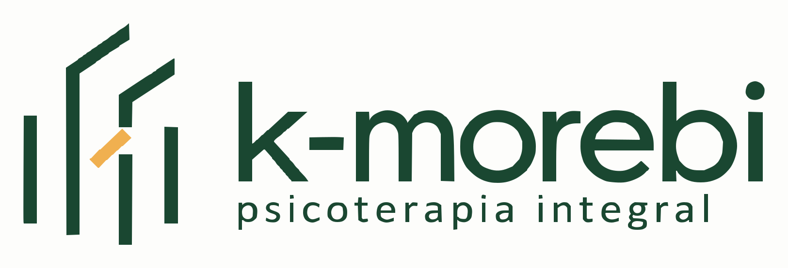
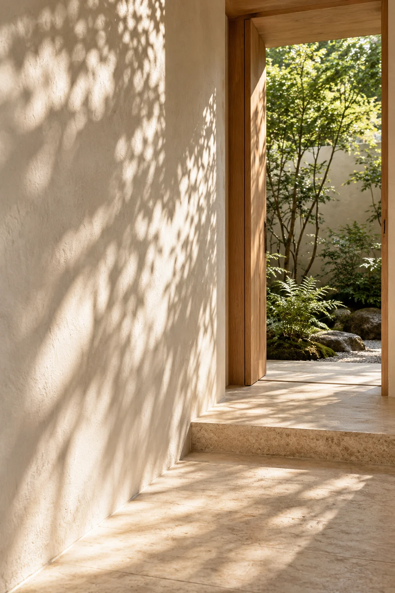

Lo que sientes
Dar lugar a emociones que te cuesta comprender, expresar o sostener en tu vida cotidiana.

Psicoterapia integral
A veces cuesta entender lo que sentimos o encontrar las palabras para contarlo. En k-morebi puedes comenzar por lo que hoy te preocupa y explorar, con acompañamiento, lo que necesitas.
Tal vez atraviesas un cambio, una pérdida o una dificultad en tus relaciones. Quizá hay algo que se repite y te gustaría comprender, o simplemente quieres dedicar un espacio a conocerte mejor.
No necesitas esperar a que el malestar ocupe todo tu día para buscar acompañamiento.
La psicoterapia permite detenerte y mirar con atención lo que estás viviendo. A través de la conversación, puedes explorar tus emociones, reconocer necesidades y encontrar nuevas perspectivas sobre tu historia.
En k-morebi, el proceso se construye contigo, considerando tus circunstancias y lo que te gustaría trabajar.
Explorar los serviciosDar lugar a emociones que te cuesta comprender, expresar o sostener en tu vida cotidiana.
Explorar vínculos, conflictos y formas de relacionarte que pueden estar generándote malestar.
Encontrar acompañamiento durante pérdidas, transiciones o momentos de incertidumbre.
Observar tu historia, tus necesidades y las decisiones que deseas tomar.
Es un momento para compartir qué te trae a consulta, conocer la forma de trabajo y preguntar lo que necesites. No tienes que preparar tu historia ni contar todo desde el principio.
Conocer la primera sesión
Si estás pensando en iniciar terapia, escríbenos para conocer las opciones de atención y decidir con información.
Consultar disponibilidad